Personal History Project: Maya Hazarika
My grandfather, Sarbeswar Hazarika, was born in Assam, India, in late 1947. In 1978, he left Assam and moved to Kuwait to work in the petroleum industry at Shuaiba, while my father, Rajneesh, and his brother attended boarding school in India. Like many Indian migrants during this period, my grandfather left home in search of economic opportunity, sending money back to support relatives in Assam. His migration connected my family’s history directly to the political instability of the Middle East during the 1980s and early 1990s
Growing up in Kuwait during this period exposed my father to major political conflicts and global events that shaped everyday life for Indian families living abroad.
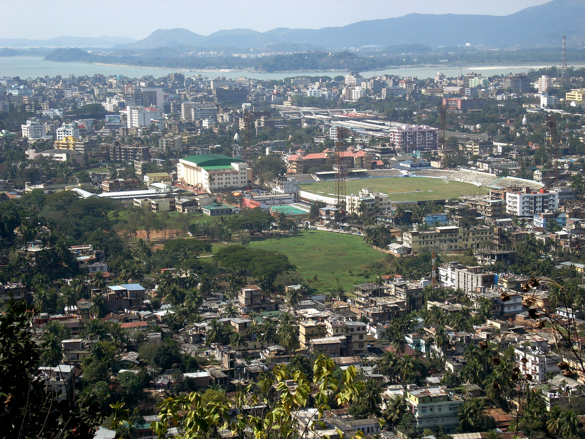
Although I was born more than 20 years after these events, the story still matters greatly to my family history. I visit Guwahati every two years, and many of the relatives my grandfather once supported while working in Kuwait still live there today. Interviewing my dad helped provide context.
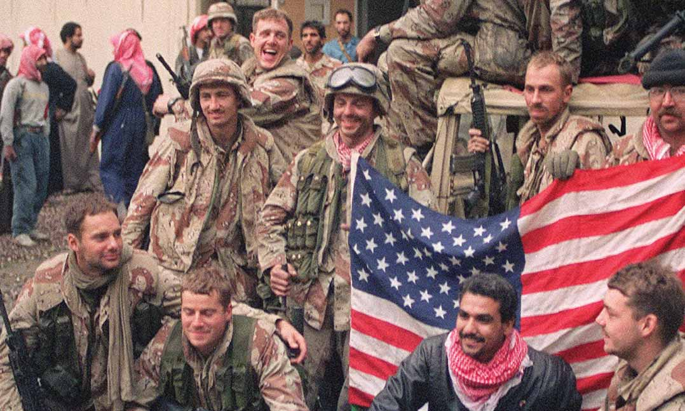
Specifically, Saddam Hussein's invasion of Kuwait in 1990 forced my grandfather to migrate back to Assam due to instability and violence.

This moment was a major turning point for families in the Gulf.
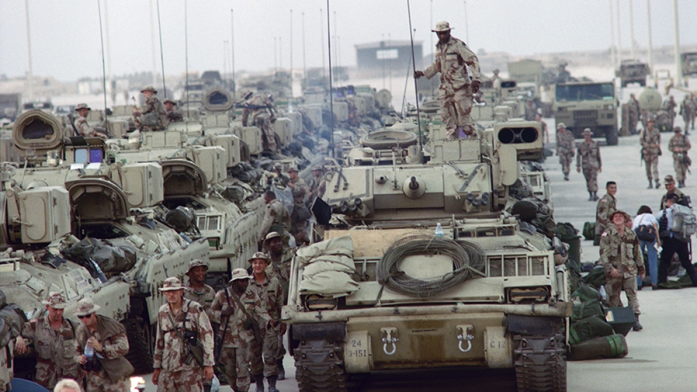
My father described the kind of work my grandfather performed while living in Kuwait.
My dad later described my grandfather's recollections of how exhausting the refinery schedule was. Working rotating shifts there, my grandfather often worked overnight in the intense desert heat of Kuwait. Even though the work was difficult, it provided financial stability that would have been hard to find in Assam at the time

This kind of stable refinery work was common among Indian migrants in Kuwait during the late twentieth century.
This stability was suddenly disrupted when the political situation escalated into war, forcing everyday life and work routines to collapse almost overnight.
The 1990 airlift of Indians from Kuwait was a large-scale evacuation operation carried out between August 13 and October 20, 1990, after Iraq invaded Kuwait during the Gulf Crisis. Organized by the Ministry of External Affairs and carried out mainly by Air India, Indian Airlines, and the Indian Air Force, the mission evacuated more than 170,000 Indian citizens who were stranded in Kuwait.
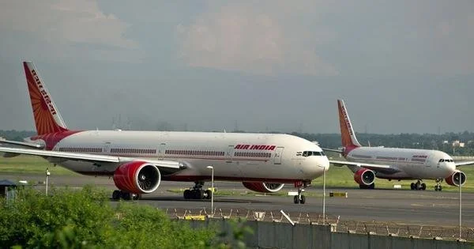
The crisis began on August 2, 1990, when Iraq, under President Saddam Hussein, invaded Kuwait with around 100,000 troops and hundreds of tanks. Within two days, Kuwaiti forces were overwhelmed, and the country was occupied. Saddam Hussein later declared Kuwait to be Iraq's nineteenth province.
One reason behind the invasion involved oil and money. After the Iran-Iraq War ended in 1988, Iraq was heavily in debt and struggling economically. Saddam Hussein accused Kuwait of producing too much oil and lowering global oil prices. Iraq claimed this violated agreements made by OPEC, the Organization of the Petroleum Exporting Countries, a group of oil-producing nations that attempts to coordinate oil production and prices. Because Kuwait had enormous oil reserves and wealth, Iraq viewed control of Kuwait as a solution to its economic problems.

My grandfather's income from Kuwait supported relatives living back in Assam.
The financial support my grandfather sent from Kuwait connected life in the Gulf directly to families in Assam, making the invasion especially frightening for relatives waiting in India. Many industrial locations were violently destroyed by Iraqi forces
The invasion disrupted daily life in Kuwait by closing businesses, causing widespread looting and destruction, and exposing civilians to violent intimidation by Iraqi soldiers.
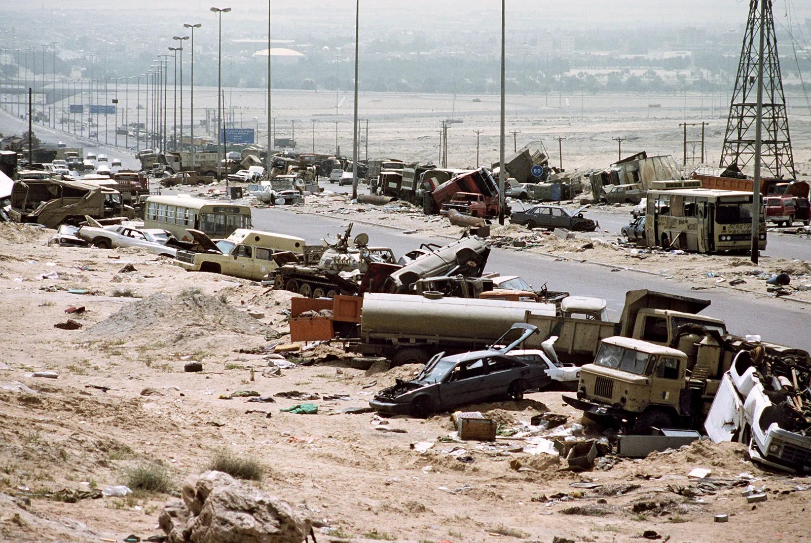
My father remembered how suddenly families in India learned about the invasion and occupation of Kuwait.
In the weeks that followed, daily life became even more uncertain as the invasion escalated into full occupation. Many Indian families soon found themselves stuck, separated from relatives.
Around 170,000 Indians from Kuwait were trapped in a war zone, many being migrant workers employed in construction, transport, oil businesses, or domestic work.
Communities lost jobs, homes, and savings as a result of businesses and factories being destroyed through the conflict.
For families outside Kuwait, news broadcasts became one of the only ways to follow the conflict and understand conditions inside the country.
Because my family was scattered across India and Kuwait at the time, the invasion created enormous uncertainty. My father remembers the fear of not knowing whether his own father would be able to leave Kuwait safely. News broadcasts showing tanks in Kuwait City were the only way to relate an international political conflict to a personal family emergency.
However, as news spread globally, governments also began responding to the growing crisis. As international attention on the invasion increased, the Indian government began organizing evacuation efforts for stranded citizens.
At first, the Indian government attempted to evacuate citizens using military aircraft. Difficulties in obtaining international airspace clearances, along with restrictions on flights from occupied territory, forced India to try a civilian evacuation plan.
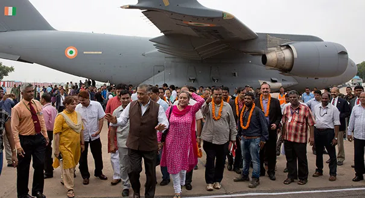
This shift led to one of the largest evacuation operations in modern history. My father later described the evacuation journey he experienced while escaping Kuwait during the crisis.

My grandpa carried only one suitcase, arriving in Assam with the minimum amount of luggage for the journey. My dad remembered him arriving with clothes tattered, in a crowded bus, not fearful but very hopeful.
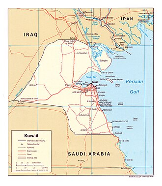
My grandfather's journey through Iraq and Jordan mirrors the journeys of thousands of Indian citizens.
Jordan, surprisingly, became the main midpoint for the evacuation. Indian diplomats and officials worked to secure safe passage for Indian citizens through Iraq and into Jordan. Foreign Minister I. K. Gujral helped in negotiations with Iraq and other countries. He met Iraqi Foreign Minister Tariq Aziz and Saddam Hussein to help arrange safe passage.
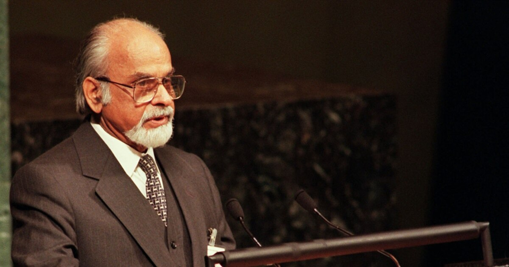
Large numbers of evacuees traveled by bus from Kuwait into Jordan, often carrying very few possessions. Temporary refugee camps were established in Amman with assistance from the United Nations and the Red Cross. Many evacuees arrived exhausted and without passports or documentation.
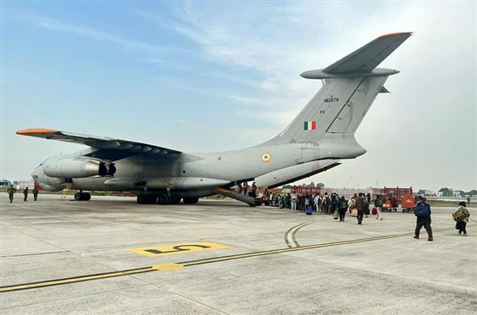
The scale of movement through Jordan showed how quickly the situation had turned into a humanitarian crisis. Air India and Indian Airlines then began a continuous airlift from Amman to Mumbai, operating 488 flights over 63 days. The flights covered more than 4,000 kilometers and carried people from many social and economic backgrounds.
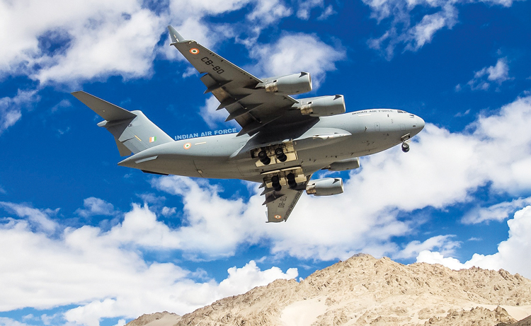
Air India crew members described the missions as extremely challenging, operating flights under emergency conditions with little ground support or security. Some flights remained stranded on runways while awaiting clearances.
After escaping through Jordan and reaching India, many Assamese evacuees continued their journeys by train and domestic flights back to Assam. Families gathered at railway stations and airports to receive relatives who had often returned with little or no money after abandoning their possessions during the conflict.
After returning to Assam, my grandfather struggled to find work, similar to the life he had established in Kuwait. Like many evacuees, he returned after abandoning possession and long-term plans. The invasion permanently changed my family’s relationship with migration and economic opportunity abroad.
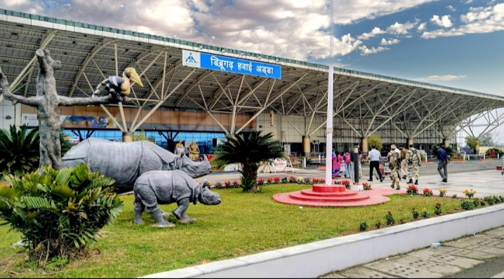
The airlift was completed before the start of Operation Desert Storm in early 1991. Its success established the evacuation as a major achievement in India's diplomatic and logistical history.
Operation Desert Storm was the United States-led military campaign launched in January 1991 to remove Iraqi forces from Kuwait. President George H. W. Bush formed a coalition of more than 30 countries, including Britain, France, Saudi Arabia, and Egypt. After weeks of air strikes and a short ground offensive, Iraqi troops were forced to withdraw from Kuwait. The operation officially ended in February 1991.
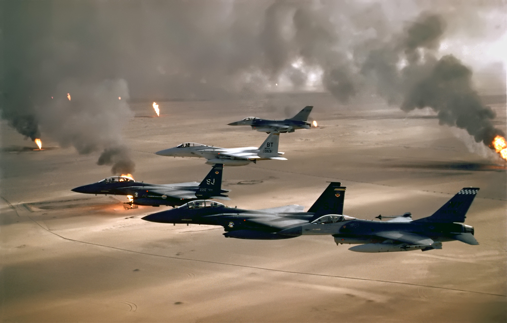
Read further if you'd like to learn more about the global political situation at the time. My Works Cited also follows
PS: How does this all relate to the end of the Cold War?
The Gulf War took place during a period of major global political transition as the Cold War was ending.
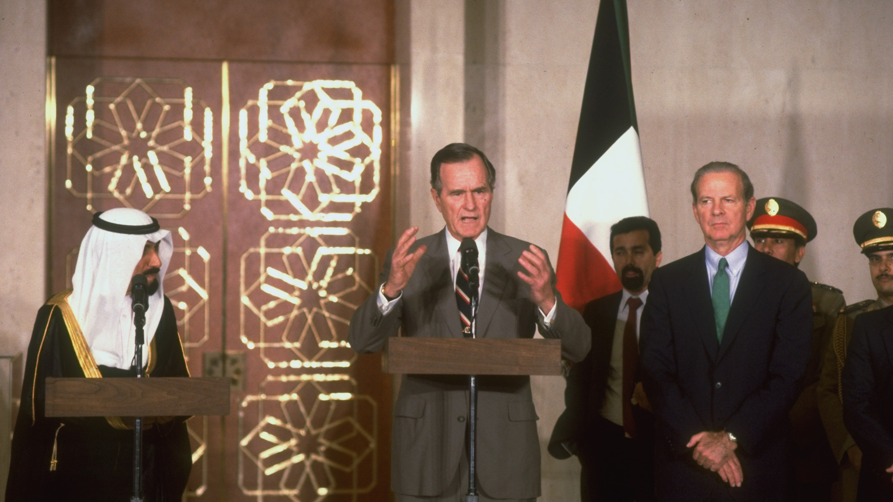
As a result of the Iraqi invasion, the US created a coalition of countries to fight against Iraq in Kuwait. As the Soviet Union collapsed around 1990, its ally Iraq was desperate for economic resources. Despite Kuwait's small size, it was incredibly wealthy due to its massive oil production. Iraq justified its invasion by stating that Kuwait was violating OPEC rules. The conflict between Iraq and the U.S.-led coalition in Kuwait could be compared to a proxy war. However, this comparison is slightly inaccurate, as the Cold War tensions were fading at this point.
As a non-aligned country, India did not officially support either Iraq or the U.S.-led coalition. However, India was more closely aligned to the USSR's ideologies. This allowed Foreign Minister I. K. Gujral to work with Saddam Hussein to evacuate Indian citizens.
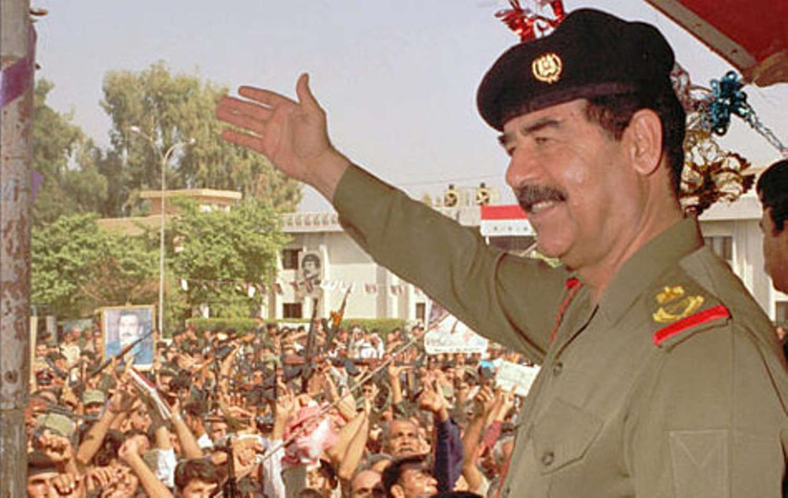
These diplomatic relationships also shaped economic conditions in India during the same period. My dad describes this development.
India’s limited economic opportunities during the 1980s were one reason my grandfather sought work abroad in Kuwait. At the same time, India’s diplomatic relationships during the Gulf Crisis helped thousands of Indian families, including mine, return safely home
Annotated Works Cited
“Persian Gulf War.” Encyclopaedia Britannica, britannica.com
“Airlift: Akshay Kumar’s Next a Thriller of the Biggest Human Evacuation.” The Times of India, timesofindia.indiatimes.com
Personal interview with my father.
“Iraqi Forces Destroying an Oil Well.” YouTube, https://www.youtube.com/watch?v=u3Frq3--iq8.
“Driving Through Kuwait After Desert Storm.” YouTube, https://www.youtube.com/watch?v=r12jZPdUlDM.
```